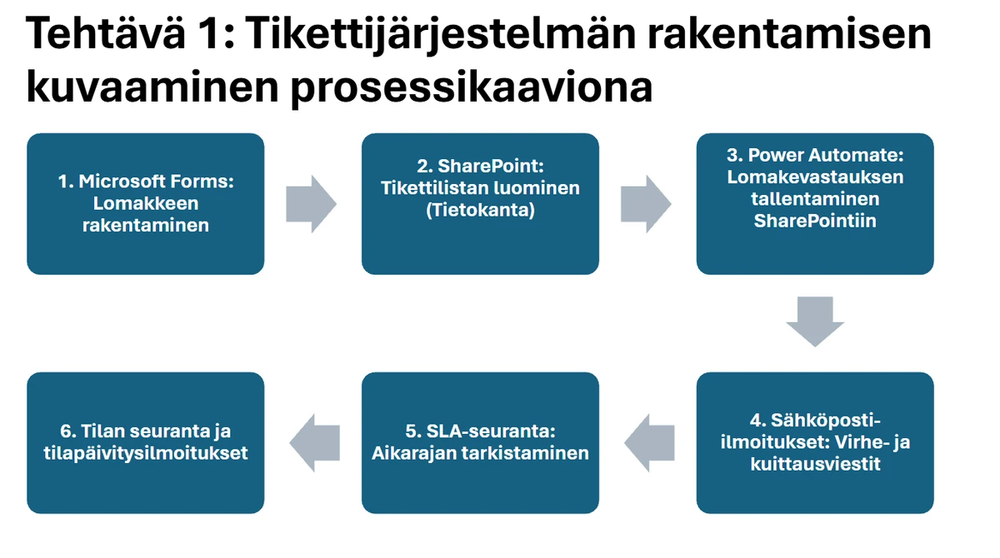

I'm looking for an 18-week work-based placement from 11 January to 23 May 2027. During the placement I need to work on tasks that match the professional requirements of these units of the qualification (Finnish-language pages):
I'm happy to go through the requirements with your contact person before the placement starts. The agreement is made with the school's TTO form.
profile
IT student at Business College Helsinki, graduating in 2027. Specialising in cybersecurity and technical support. I'm completing the Vocational Qualification in Information and Communications Technology (IT Support) with top grades (S+) in cybersecurity, system administration and automation. I learn best by doing, and the projects below come with screenshots and demos.
key skills
IT support & systems
Technical helpdesk / service desk, remote support, Windows and Linux/Unix administration, user account management, hardware and driver troubleshooting, network and printing issues, ITIL-based service processes, SLA awareness, ticket handling and documentation.
Microsoft 365 & automation
Microsoft Forms, SharePoint lists and Power Automate (ticketing system), Office 365, Excel, PowerPoint, Word.
Cybersecurity
Threat awareness and risk assessment, encryption methods, web application security / ethical hacking basics, security update management, phishing recognition, data protection (GDPR) and IT law.
Scripting & development
Unix/Linux command line, Python (basics), HTML5 & CSS3, task scripting and automation, AI-assisted development and local language models (Ollama).
Languages
Filipino (native), Finnish (fluent, S2), English (fluent), Swedish (basics).
projects & proof
// support & automation
Ticketing system on Microsoft 365
Microsoft Forms · SharePoint · Power Automate · school assignment
For a school assignment I built a ticketing system with Microsoft 365 tools. A user submits a ticket through a Forms form, Power Automate saves the response to a SharePoint ticket list and sends a confirmation or error email. The system tracks response time (SLA) and sends status updates. I also wrote a user manual for it.
What I learned: the lifecycle of a ticket, SLA time tracking, and describing a process as a flowchart.

Process diagram: form → ticket list → automation → notifications → SLA tracking → status updates. (The diagram text is in Finnish.)
// cybersecurity
Recognising phishing: QR simulation
QR code · security awareness · school assignment
This school assignment simulates QR-code phishing. The QR code opens a page that is clearly labelled as a simulation. A fictional company asks for feedback on a metro system and asks the user to “sign in” before giving it. No credentials are collected or stored, and the exercise ends with a debrief explaining how the attack could have been spotted.
Signs I learned to recognise: an unknown QR code in a public place, a sign-in request just to give feedback, and an address bar that doesn't match the real Google address.
Demo (30 s): QR scan → simulation page → debrief and tips. (Page text is in Finnish.)
The simulation ran only on a local machine for the exercise. This site does not include the simulation's code.
Cybersecurity practice
TryHackMe · Hakatemia · web application security
I completed cybersecurity exercises and labs on my own through Hakatemia and TryHackMe. I practised finding and exploiting common web application vulnerabilities in a safe, legal lab environment.
// linux & personal projects
Arch Linux in a virtual machine
Arch Linux · VMware Workstation · pacman · bash
I installed Arch Linux in a VMware virtual machine by following the Arch installation guide: partitioning and formatting the disk (ext4), installing the base system and creating a user. I also installed fastfetch to check the system details.
What I learned: how a Linux system is built piece by piece without a ready-made installer.
Ollama · local language models · VRoid · browser interface
I installed and configured an AI companion that runs locally on my own computer using Ollama and local language models. I gave the character a personality and a simple memory, and made its 3D model in VRoid. I used AI to help with setup and configuration.
What I learned: how local language models work, how a prompt shapes a character's behaviour, and how to troubleshoot step by step.
Demo (29 s): chatting with the local AI companion in the browser.
Azbuka Strike: the Russian alphabet as an FPS
browser game · audio · AI-assisted build
A browser FPS for learning the Russian alphabet: you shoot letters, and each hit reads the letter aloud with an example word. Learn mode is free practice. In Match mode you hear a letter and shoot it among five decoys (20 rounds). Custom audio files can be loaded. Built with AI assistance.
Demo (30 s): main menu and gameplay; the letter is read aloud after a hit.
Home lab
PC build · operating system install
I built and configured my own desktop PC: choosing components, assembling it, installing the operating system and optimising performance.
work experience
Guest support trainee (TET work placement)
Bob W Finland Oy — accommodation technology company
Provided guest support and solved problems by phone, email and chat during a technology-focused hospitality placement; developed customer communication skills for service desk work.
Gave feedback and improvement suggestions to raise service quality and replied to guest reviews, showing reliability and an independent way of working.
Earlier TET placements
Hotel maintenance and general tasks assistant (March).
Vocational Qualification in Information and Communications Technology (IT Support)
Business College Helsinki
Core studies, grade S+: problem solving, operating systems and computer operation, network communication and information security.
Professional studies (S+): technical support practice, customer communication, application and operating system support, remote device support, handling and documenting service requests.
Optional path — system administration: server management, scripting and automation, threat identification and defence, encryption methods, GDPR.
Optional studies (Excellent): web hacking basics, HTML5/CSS3 and Python basics, Unix command line basics.